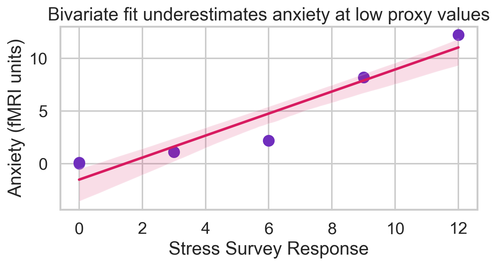
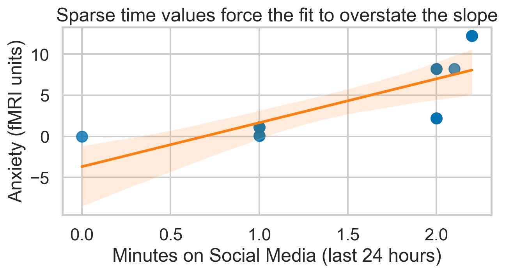

| Stress | StressSurvey | Time | Anxiety | |
|---|---|---|---|---|
| 0 | 0 | 0 | 0.0 | 0.00 |
| 1 | 0 | 0 | 1.0 | 0.10 |
| 2 | 0 | 0 | 1.0 | 0.10 |
| 3 | 1 | 3 | 1.0 | 1.10 |
| 4 | 1 | 3 | 1.0 | 1.10 |
| 5 | 1 | 3 | 1.0 | 1.10 |
| 6 | 2 | 6 | 2.0 | 2.20 |
| 7 | 2 | 6 | 2.0 | 2.20 |
| 8 | 2 | 6 | 2.0 | 2.20 |
| 9 | 8 | 9 | 2.0 | 8.20 |
| 10 | 8 | 9 | 2.0 | 8.20 |
| 11 | 8 | 9 | 2.1 | 8.21 |
| 12 | 12 | 12 | 2.2 | 12.22 |
| 13 | 12 | 12 | 2.2 | 12.22 |
| 14 | 12 | 12 | 2.2 | 12.22 |
Regression & Interpretability Challenge
Don’t Trust Linear Models - The Perils of Non-Linearity
Executive Summary
Linear regressions only tell the truth when the functional form matches reality. Using a stress–anxiety example, I contrasted models that rely on an imperfect proxy (StressSurvey) against models that use the true stress level. Every regression “fits” the data and produces highly significant coefficients, yet only the correctly specified model recovers the known causal relationship (\(Anxiety = Stress + 0.1 \times Time\)). The analysis surfaces three lessons: (1) monotonic proxies are not the same as linear controls, (2) statistical significance says nothing about interpretability, and (3) slicing the data into regimes with consistent functional forms is a practical guardrail.
Data and Ground Truth
The synthetic data simulate anxiety measured via fMRI, true stress (via cortisol), a survey-based stress proxy, and minutes of social media use in the past 24 hours. By construction:
\[ Anxiety = Stress + 0.1 \times Time \]
The StressSurvey proxy is monotonic but mildly curved relative to the true stress level, intentionally creating the interpretability trap.
Modeling Helpers
All regressions are ordinary least squares (OLS) fits computed with statsmodels. I also pre-compute utility functions so each question can focus on interpretation instead of mechanics.
Question 1 — Bivariate Regression with StressSurvey
The OLS fit of Anxiety ~ StressSurvey produces a slope of 1.047 and an intercept of −1.524. Although the slope is close to the true stress coefficient (1.0), the intercept shift is substantial and signals model bias. The high \(R^2\) (0.90) and tiny p-value for the slope (6.7e−8) create a false sense of reliability despite the biased functional form.
| term | coef | std_err | p_value | |
|---|---|---|---|---|
| 0 | const | -1.524 | 0.707 | 0.05042 |
| 1 | StressSurvey | 1.047 | 0.096 | 0.00000 |
Question 2 — Visualization of StressSurvey vs. Anxiety
The scatter plot (dependent variable on the vertical axis) shows the non-linear, piecewise structure of the proxy. The regression line slices through the cloud with a noticeable vertical offset, underestimating anxiety at low proxy values and overestimating it at high values. The curvature that is obvious in the plot is exactly what the linear regression cannot capture.

Question 3 — Bivariate Regression with Time
Regressing Anxiety ~ Time alone yields a slope of 5.34 and an intercept of −3.68. The true causal coefficient of time spent on social media is only 0.1, so the bivariate fit exaggerates the effect by over 50× because it is forced to absorb stress variation that has been omitted. The model still reports a respectable \(R^2\) (0.56) and a significant slope (p = 0.0013), illustrating how omitted variable bias converts a mild causal effect into an alarmist story.
| term | coef | std_err | p_value | |
|---|---|---|---|---|
| 0 | const | -3.680 | 2.233 | 0.12330 |
| 1 | Time | 5.341 | 1.305 | 0.00127 |
Question 4 — Visualization of Time vs. Anxiety
Only four unique time values exist in the data, so the regression line is effectively a steep staircase that chases group means. The plot highlights how a limited range of the independent variable causes overfitting: each cluster is vertically spread by stress differences, yet the regression interprets those differences as extra slope on time.

Question 5 — Multiple Regression with StressSurvey and Time
Adding Time alongside the proxy yields coefficients of 1.427 on StressSurvey and −2.78 on Time, with both terms statistically significant. The model’s \(R^2\) rises to 0.94, yet it now claims that holding the survey proxy constant, additional time online reduces anxiety. This is the classic interpretability failure: the regression has high explanatory power but reverses the sign of the time effect relative to the truth because the proxy distorts how stress is “controlled for.”
| term | coef | std_err | p_value | |
|---|---|---|---|---|
| 0 | const | 0.589 | 1.034 | 0.57954 |
| 1 | StressSurvey | 1.427 | 0.172 | 0.00000 |
| 2 | Time | -2.780 | 1.111 | 0.02782 |
Question 6 — Multiple Regression with True Stress and Time
When stress is measured directly and included with time, OLS recovers the known coefficients exactly: intercept ≈ 0, stress coefficient = 1, and time coefficient = 0.1, with \(R^2 = 1.0\). This regression is the reference point that every other specification should be compared against.
| term | coef | std_err | p_value | |
|---|---|---|---|---|
| 0 | const | 0.0 | 0.0 | 0.91522 |
| 1 | Stress | 1.0 | 0.0 | 0.00000 |
| 2 | Time | 0.1 | 0.0 | 0.00000 |
Question 7 — Model Comparison and Statistical Significance
Both multiple regressions present “convincing” statistics, yet only the model with true stress is interpretable. The table below juxtaposes coefficient magnitudes, signs, and \(p\)-values.
| Model | R_squared | Stress-like term | Time term | p(Stress-like) | p(Time) | |
|---|---|---|---|---|---|---|
| 0 | StressSurvey + Time | 0.935 | 1.427 | -2.78 | 0.0 | 0.02782 |
| 1 | Stress + Time | 1.000 | 1.000 | 0.10 | 0.0 | 0.00000 |
Key takeaways: (1) a 0.935 \(R^2\) can still produce the wrong story; (2) “significant” does not mean “correct sign”; and (3) interpretation hinges on whether the control variable truly linearizes the relationship.
Question 8 — Real-World Headlines
- If the proxy-based model were published: Popular press outlets would run headlines like “Extra Hour on TikTok Lowers Anxiety, Study Finds” because the estimated time coefficient is negative and significant. Parents seeking hope might embrace this narrative, even though it is entirely spurious.
- If the true-stress model were published: Headlines would instead read “Stress Drives Anxiety, Social Media Adds a Small but Real Bump.” This version resonates with the typical parent’s intuition that both stress and screen time are harmful. Social media companies would naturally prefer the first headline because it argues their platforms are protective. The same dataset therefore feeds opposite narratives depending on model specification.
Question 9 — Subset Analysis to Avoid Misleading Significance
Following the “statistical regimes” tip, I restricted the sample to observations where Stress ≤ 6. In this low-to-moderate range the survey proxy is almost perfectly linear with true stress (exactly three survey points per stress unit), eliminating the curvature that caused coefficient flips. The resulting regression keeps both coefficients significant and close to the true relationship: StressSurvey enters with 0.333, which maps back to a stress coefficient of 1 because Stress = StressSurvey / 3 inside this regime, and Time retains the correct 0.1 effect with \(R^2 = 1.0\). This exercise demonstrates how thoughtful subsetting can reveal whether a misleading coefficient arises from functional-form violations rather than sampling noise.
| term | coef | std_err | p_value | |
|---|---|---|---|---|
| 0 | const | 0.000 | 0.0 | 0.6634 |
| 1 | StressSurvey | 0.333 | 0.0 | 0.0000 |
| 2 | Time | 0.100 | 0.0 | 0.0000 |
Bottom line: Regression output is only as interpretable as the assumptions baked into the covariates. Visual diagnostics and regime-based splits are lightweight tools that keep “garbage can” regressions from producing garbage insights.